SymbolicIntegral¶
About the SymbolicIntegral class¶
The WaveBlocks Project
@author: R. Bourquin @copyright: Copyright (C) 2010, 2011, 2012, 2013, 2014 R. Bourquin @license: Modified BSD License
Inheritance diagram¶
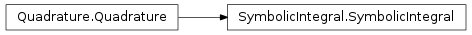
Class documentation¶
- class WaveBlocksND.SymbolicIntegral(doraise=False, *unused, **kunused)¶
- __init__(doraise=False, *unused, **kunused)¶
Use a symbolic exact formula for computing the inner product between two semi-classical wavepackets. The formula is constructed explicitly for the inhomogeneous case.
Parameters: doraise – Raise an InnerProductException exception in case the symbolic formula will fail due to an inherent mathematical singularity. Default is False.
- exact_result_ground(Pibra, Piket, eps)¶
Compute the overlap integral 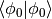 of the groundstate 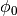 by using the symbolic formula:
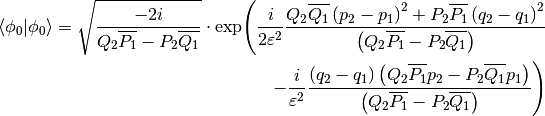
Note that this is an internal method and usually there is no reason to call it from outside.
Parameters: - Pibra – The parameter set
 of the bra 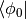.
of the bra 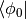. - Piket – The parameter set 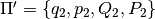 of the ket 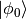.
- eps – The semi-classical scaling parameter 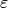.
Returns: The value of the integral .
- Pibra – The parameter set
- exact_result_higher(Pibra, Piket, eps, k, l)¶
Compute the overlap integral 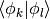 of two states 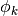 and 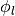 by using the symbolic formula:
![\langle \phi_k | \phi_l \rangle =
\frac{1}{\sqrt{k!l!}} 2^{-\frac{k+l}{2}} \langle \phi_0 | \phi_0 \rangle \cdot
\left(i \overline{ P_1} Q_2 - i \overline{Q_1} P_2\right)^{-\frac{k+l}{2}} \cdot \\
\sum_{j=0}^{\min\left(k,l\right)}
\Biggl(
\binom{k}{j} \binom{l}{j} j! 4^j
\left(i Q_2 P_1 - i Q_1 P_2\right)^{\frac{k-j}{2}}
\left(i \overline{Q_2 P_1} - i\overline{Q_1 P_2}\right)^{\frac{l-j}{2}}
\\
\cdot H_{k-j}\left(-\frac{1}{\varepsilon}
\frac{Q_2\left(p_1-p_2\right)-P_2\left(q_1-q_2\right)}
{\sqrt{Q_2 P_1 - Q_1 P_2}\sqrt{\overline{P_1}Q_2-\overline{Q_1} P_2}}\right)
\\
\cdot H_{l-j}\left(\frac{1}{\varepsilon}
\frac{\overline{ P_1}\left(q_1-q_2\right)-\overline{Q_1}\left(p_1-p_2\right)}
{\sqrt{\overline{Q_2 P_1}-\overline{Q_1 P_2}}\sqrt{\overline{ P_1}Q_2-\overline{Q_1} P_2}}\right)
\Biggr)](../_images/math/75a311d234461da0ea14f25c152d357429fc43c5.png)
Note that this is an internal method and usually there is no reason to call it from outside.
Parameters: - Pibra – The parameter set of the bra 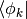.
- Piket – The parameter set of the ket 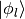.
- eps – The semi-classical scaling parameter .
- k – Index
 of the wavepacket basis function .
of the wavepacket basis function . - l – Index 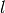 of the wavepacket basis function .
Returns: The value of the integral .
- Pibra – The parameter set
- get_description()¶
Return a description of this integral object. A description is a dict containing all key-value pairs necessary to reconstruct the current instance. A description never contains any data.
- get_qr()¶
Return the QuadratureRule subclass instance used for quadrature.
Returns: The current instance of the quadrature rule.
- initialize_operator(operator=None, matrix=False, eval_at_once=False)¶
Provide the operator part of the inner product to evaluate. This function initializes the operator used for quadratures and for building matrices.
Note
The symbolic solution can not handle operators at all.
Parameters: - operator – The operator of the inner product. If None a suitable identity is used.
- matrix – Set this to True (Default is False) in case we want to compute the matrix elements. For nasty technical reasons we can not yet unify the operator call syntax.
- eval_at_once (Boolean, default is False.) – Flag to tell whether the operator supports the entry=(r,c) call syntax. Since we do not support operators at all, it has no effect.
- initialize_packet(pacbra, packet=None)¶
Provide the wavepacket parts of the inner product to evaluate. Since the formula is for the inhomogeneous case explicitly, different wavepackets can be used for the ‘bra’ as well as the ‘ket’ part.
Parameters: - pacbra – The packet that is used for the ‘bra’ part.
- packet – The packet that is used for the ‘ket’ part.
Raises : ValueError if the dimension of
 is not 1.
is not 1.
- perform_build_matrix(row, col)¶
Computes the matrix elements 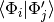 by an exact symbolic formula.
Parameters: - row – The index
 of the component
of the component  of .
of . - row – The index 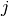 of the component 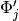 of 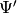.
Returns: A complex valued matrix of shape 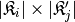.
- row – The index
- perform_quadrature(row, col)¶
Evaluates the integral by an exact symbolic formula.
Parameters: - row – The index of the component of .
- row – The index of the component of .
Returns: A single complex floating point number.
- row – The index
- prepare(rows, cols)¶
Precompute some values needed for evaluating the integral or the corresponding matrix over the basis functions of
and .
Note that this function does nothing in the current implementation.Parameters: - rows – A list of all with 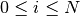
selecting the for which we precompute values.
- cols – A list of all with 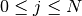 selecting the for which we precompute values.
- rows – A list of all
- set_qr(QR)¶
Set the QuadratureRule subclass instance used for quadrature.
Parameters: QR – The new QuadratureRule instance.